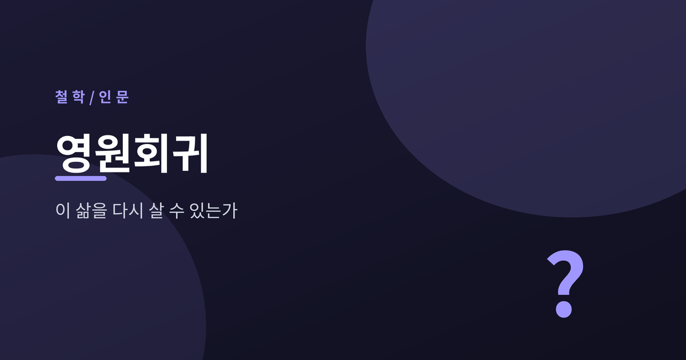

이 삶을 다시 살 수 있는가

오늘은 니체의 영원회귀(永遠回歸)에 대해 이야기해 보려 합니다. "지금 이 삶을 똑같이 다시 살아야 한다면, 당신은 그것을 받아들일 수 있겠는가." 한 문장으로 압축되는 이 물음이 왜 니체 사상의 한복판에 놓이는지, 개념과 출전과 해석 논쟁을 차분히 정리해 보겠습니다.
영원회귀는 독일어로 die ewige Wiederkunft, 우리말로는 영원회귀 또는 영겁회귀라 옮깁니다.
내용은 단순합니다. 지금 이 삶이, 지금 사는 그대로, 무한히 여러 번 똑같이 되풀이된다는 것입니다.
같은 사건, 같은 사람, 같은 고통과 같은 기쁨이 하나도 빠짐없이 같은 순서로 다시 온다고 상상해 보십시오.
니체는 이 사상을 자신의 근본 사상이라 불렀습니다. 『이 사람을 보라』에서는 『차라투스트라』의 근본 착상이라고 밝혔습니다.
다만 그는 이 생각을 체계적으로 논증하지 않았습니다. 오히려 드물게, 그리고 매우 암시적이고 은유적인 방식으로만 꺼냈습니다.
착상의 순간은 전해집니다. 1881년 8월, 스위스 실스마리아 근처 질바플라나 호숫가를 걷던 니체는 피라미드 모양의 큰 바위 앞에서 걸음을 멈췄습니다. 그는 그날의 메모에 "인간과 시간을 넘어 6000피트"라고 적었습니다.
이 사상이 처음 활자로 등장한 곳은 1882년의 『즐거운 학문』입니다. 341절, 제목은 "가장 무거운 무게"입니다.
니체는 하나의 우화를 던집니다.
어느 날 밤, 한 악령이 너의 가장 깊은 고독 속으로 몰래 찾아와 말한다. "네가 지금 살고 있고 살아온 이 삶을, 너는 한 번 더, 그리고 무수히 여러 번 더 똑같이 다시 살아야 한다. 새로운 것은 하나도 없다. 모든 고통과 모든 기쁨, 모든 생각과 한숨이 같은 차례로 되돌아온다."
이 말을 들은 당신은 어떻게 하겠습니까.
니체는 두 갈래의 반응을 나란히 둡니다. 땅에 엎드려 이를 갈며 그 악령을 저주하거나, 아니면 그를 신이라 부르며 "이보다 더 신성한 말을 들은 적이 없다"고 답하거나.
여기서 오해를 하나 풀어야 합니다. 니체는 이것을 우주의 사실로 증명하려던 것이 아닙니다.
이 우화는 시험입니다. "네 삶을 얼마나 온전히 긍정하고 있는가"를 재는 물음입니다.
질문의 초점은 영원회귀가 참인지가 아닙니다. 만약 그렇다면 너는 어떻게 반응하겠는가, 바로 그것입니다.
그래서 이 사상은 매 순간에 가장 무거운 무게를 지웁니다. 되풀이를 기꺼이 바랄 만큼 지금 이 순간을 살고 있는지, 매번 되묻게 만들기 때문입니다.
영원회귀는 『차라투스트라는 이렇게 말했다』(1883~85)에서 작품의 근본 사상으로 자리합니다. 니체는 이 책을 영원회귀에 대한 시적이고 음악적인 증명처럼 구상했습니다.
흥미롭게도 정작 이 사상이 직접 등장하는 대목은 매우 적습니다. 주로 "환영과 수수께끼에 대하여"와 "건강을 되찾는 자" 두 장에 몰려 있습니다.
가장 유명한 장면은 성문 앞입니다. 차라투스트라는 난쟁이와 함께 "순간"이라 이름 붙은 성문 앞에 섭니다. 그 문에서 두 개의 길이 갈라집니다. 과거로 무한히 뻗은 길과 미래로 무한히 뻗은 길이, 바로 이 순간에서 마주칩니다. 시간이 원처럼 돌아온다는 이미지입니다.
이어 또 하나의 환영이 나옵니다. 한 젊은 목자의 목구멍으로 검은 뱀이 기어들어 그를 물고 있습니다. 차라투스트라는 "뱀의 머리를 물어뜯어라"고 외칩니다. 목자가 그 머리를 물어뜯어 뱉어내고는 벌떡 일어나 웃습니다.
이 웃음은 인간을 넘어선 자의 웃음으로 읽힙니다. 가장 무거운 사상에 대한 구역질, 곧 허무를 이겨내고 긍정에 이르는 순간이라는 것입니다.
영원회귀는 홀로 서 있는 개념이 아닙니다. 아모르 파티, 곧 운명애와 짝을 이룹니다.
아모르 파티는 자기 운명을, 그 고통과 필연까지 끌어안아 사랑하는 태도입니다. 니체는 『즐거운 학문』 276절에서 이렇게 말합니다. "필연적인 것을 아름답게 보는 법을 배우고 싶다. 언젠가 나는 오직 긍정하는 자가 되고 싶다."
니체는 영원회귀를 도달 가능한 긍정의 최고 형식이라 불렀습니다. 영원회귀의 시험을 통과한다는 것은, 내 삶의 모든 순간이 영원히 되돌아오기를 스스로 바랄 만큼 운명을 사랑한다는 뜻입니다.
이 물음은 홀로 오지 않고 두 개념을 데리고 옵니다. 힘에의 의지와 초인입니다. 『차라투스트라』의 세 가르침이 바로 이것입니다.
힘에의 의지는 살아 있는 모든 것의 근본 충동을 가리킵니다. 초인은 신의 죽음 이후, 저편 세계에 기대지 않고 이 지상의 삶을 스스로 긍정하고 창조하는 존재입니다.
하이데거 이래로 이 셋은 떼어놓기 어려운 것으로 여겨져 왔습니다. 영원회귀를 견디고 긍정할 수 있는 자가 곧 초인이고, 그 긍정의 힘이 힘에의 의지와 맞닿는다는 독법입니다.
이 지점에서 오래된 논쟁이 갈립니다. 영원회귀는 우주에 관한 사실 주장일까요, 아니면 삶에 관한 태도 시험일까요.
한쪽은 우주론적으로 읽습니다. 니체의 미출간 노트에는 에너지 총량은 유한하고 시간은 무한하므로 같은 배열이 무한히 되풀이된다는 논증의 흔적이 있습니다. 이를 근거로 니체가 실제 물리적 반복을 믿었다고 보는 연구자도 있습니다.
다른 한쪽은 실존적 사고실험으로 읽습니다. 그가 세상에 내놓은 형태, 특히 341절의 서술 자체가 증명이 아니라 "만약 그렇다면 너는?"이라는 시험의 형식이라는 점을 근거로 듭니다. 카우프만처럼 이 개념을 비유로 보는 해석이 여기에 속합니다.
저는 어느 한쪽을 사실로 단정하지 않으려 합니다. 니체가 한때 우주론적 논증에 끌린 흔적은 분명 있습니다. 다만 그가 독자 앞에 내민 물음은 무엇보다 삶을 향한 실존적 물음으로 작동합니다.
예전에는 이 사상을 그저 기묘한 우주론으로 읽는 시선이 많았습니다. 지금은 저편 세계로의 도피를 차단하고 지금 이 삶으로 시선을 되돌리는 장치로 읽는 해석에 무게가 실립니다.
물론 한계는 있습니다. 니체가 이 사상을 끝까지 정돈해 내놓지 않았기에, 어떤 독법도 그의 의도를 완전히 확정하지는 못합니다.
정리하면 이렇습니다.
영원회귀는 답을 주는 사상이 아니라 물음을 세우는 사상입니다. 우주가 정말 돌아가느냐보다, 그것이 돌아온다 해도 당신이 지금의 삶을 다시 택하겠느냐를 묻습니다.
그래서 니체의 이 물음은 이렇게 압축됩니다. "이 삶을, 있는 그대로, 다시 한 번."
다시 살겠냐고 악령이 묻는다면 어떻게 답할지, 그 대답을 준비하며 오늘 하루를 사는 일 — 어쩌면 니체가 남긴 가장 무거운, 그리고 가장 다정한 숙제일지 모릅니다.